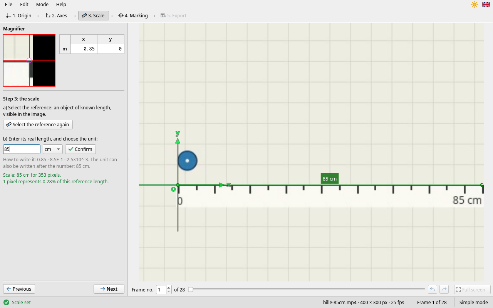

The scale
A reference drawn on the frame, and its real length
On the frame, MeVCine measures pixels. To get metres, it needs a reference: an object of known length, visible on the frame. You draw it, you give its length, and MeVCine deduces the number of pixels per metre. All the measurements, already made or to come, are then in metres.
Choosing a good reference
- In the plane of the motion: a ruler placed where the object moves, not in front of it nor behind it. What is closer to the camera looks bigger!
- As long as possible on the frame: a one-pixel error on a 20-pixel reference means a 5 % error on every measurement; on a 350-pixel reference, less than 0.3 %.
- Ends that are easy to aim at: the two ends of a ruler, the edges of a door, two marks on the ground measured with a tape.
- Facing the camera, like the motion itself.
Drawing the reference
Simple mode: step 3, Select the reference. Expert mode: at the top of the Marking tab, Set the scale (Redo the scale once the scale is set). Then, on the frame:
- two clicks, one on each end (in between, the line follows the mouse);
- or a drag from one end to the other, with the button held down.
Aim with the magnifier. Right-click or Esc cancels: the previous scale stays. You may change frame before drawing the reference: it does not need to be on the marked frame.
Writing the length, and its unit
Type the number, and choose the unit in the list: mm, cm or m. A decimal
point or comma, as you like; powers of 10 are allowed.
| You type | Unit in the list | Length |
|---|---|---|
85 | cm | 85 cm = 0.85 m |
0.85 or 0,85 | m | 0.85 m |
850 | mm | 850 mm = 0.85 m |
8.5E-1 | m | 0.85 m |
2.5×10^-3 or 2.5*10**-3 | m | 0.0025 m |
85 cm, 850mm, 0.85 m | (does not matter) | the written unit wins, and the list follows it |
Another unit (1 km, 8 dm…), a zero or negative length, or text that
is not a number, is refused, with a message that says why.
Simple mode: the length is typed in the instruction of step 3, then Confirm. Expert mode: in the small “Length of the reference” window, which opens as soon as the reference is drawn; OK confirms, Cancel or Esc abandons the reference.


Checking, changing the scale
Read the length printed beside the green line. In the screenshot, 353 pixels represent 85 cm. A displacement of 20 pixels in this plane therefore represents 20 × 0.85 / 353 ≈ 0.048 m. Check the calibration against another known distance in the same plane.
If every distance is a hundred times too large, check the selected unit. Recalibrating also updates earlier measurements. The column changes from x (px) to x (m) when the scale is accepted.
To estimate the effect of marking the endpoints, change the length of the 353-pixel segment by one pixel. The relative change is about 0.28%. Ask several pairs to calibrate the same image to see the spread in your own results.
If the 20-pixel horizontal displacement takes 0.040 s, the mean horizontal velocity is about 0.048 / 0.040 = 1.2 m/s along the positive axis. To compare with the velocity at a specific frame, use the three positions in the plotter.